Chapter 4 Other Discrete Distributions
4.1 Geometric Distribution
For the next distribution, imagine a basketball player that is not particularly good. Whenever he takes a free throw, there is a 10% probability that he makes it. How many free throws can we expect him to shoot before he makes one?
The geometric distribution helps us answer this question. We can think of this as a spread of N trials required to reach a probability p in the following equation.
\[P(N = n) = (1-p)^{n} p \hspace{0.7cm}for\hspace{0.2cm} n=0,1,...,\infty\]
Since trials can only be measured in integers, the geometric distribution is a type of discrete distribution.
Although there is a more in-depth proof, the formula for this distribution is already quite intuitive. First, the geometric distribution needs n failures and one success for N to equal n. Likewise, if the probability of a success is represented by \(p\), the probability of a failure must be \(1-p\).
When can we use a geometric distribution, and does it apply to the free throw example? In order to model a random process with the geometric distribution, it must meet the following assumptions:
Every “trial” must be independent of each other. In other words, the outcome of one trial does not have any bearing on the other outcomes.
There are only “successes” and “failures.” If a response has more than two outcomes, we should not use the geometric distribution.
The probability of success remains consistent for each trial.
It is possible that these assumptions may not be fully met in our case study. For example, does the basketball player get tired over time, thus decreasing the probability of a successful free throw? This would violate the third assumption.
The geometric distribution has a mean or expected value of \(\frac{1-p}{p}\). This means that if we had many similar basketball players shoot free throws, their long run average “failures” would be (\(\frac{1-0.1}{0.1}=9\)), i.e. their average “successful” free throw would be on shot 10.
Now that we have found the long run mean of the geometric distribution, let’s see how we can visualize the first thirty shots that the basketball player takes. Again, we’ll use a d(density) function (in this case called dgeom) to produce the individual densities for each of the shots in the total distribution. dgeom has 3 arguments.
A vector of integers in order to return their corresponding densities. We can imagine this as the probability of \(x\) failures before the first success. Here, we’ll use
0:30to represent the integers 0, 1, 2, … , 29, 30.The
probor probability of a successful free throw.An optional
logargument.
# Create a data frame with the first 30 values, incremented by 1, as well as a geometric distribution.
dgeom <- tibble(failures = 0:30,
density = dgeom(x = 0:30, prob = 0.1, log = FALSE))
# Create plot
ggplot(dgeom) +
geom_bar(aes(x = failures, y = density), stat = "identity") +
labs(x = "Missed Shots", y = "Density")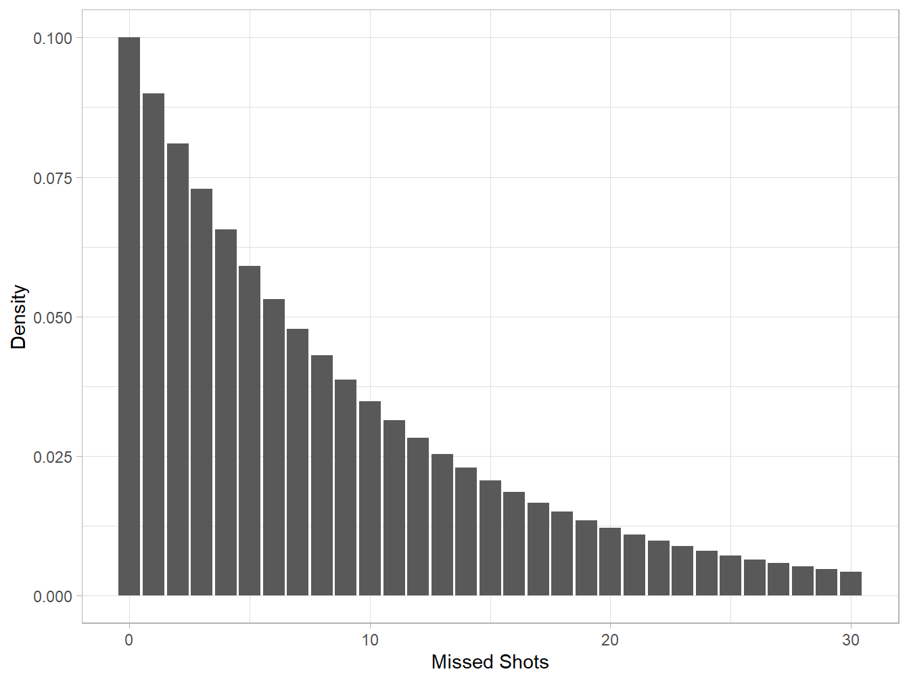
Each ith value on the x axis and its corresponding jth y value can be conceptualized as “There is a j probability that the basketball player had i failures before his first successful free throw.”
As suggested in the plot above, the probability that a shot is the first success approaches 0 as the observation number approaches infinity.
Now let’s talk about the stat argument in geom_bar. By default, this is set to "count". This means that the height of an x-value’s bar is determined by the number of times that it appears in a dataset. By changing this argument to "identity", ggplot looks for a corresponding y aesthetic to determine the height of the bar.
If we don’t alter the behavior of geom_bar we would get a plot that looks like this:
# Don't do this!
ggplot(dgeom) +
geom_bar(aes(x = failures)) +
labs(x = "Missed Shots", y = "Density")To calculate the probability of a range of outcomes we can use the function pgeom(). For example, how likely is it that the player can make a free throw in 9 or fewer shots? To find this, we’ll plug in \(q = 8\).
# Create a cumulative density function
pgeom(8, 0.1)## [1] 0.6125795We plug in \(q=8\) instead of \(q=9\) because the first argument of function requires the number of failures until the first succcess. In other words, the value that pgeom returns can be thought of as the probability that we have less than or equal to 8 failures before the first successful free throw.
When using a “p” or distribution function with lower.tail = TRUE, the first argument is our right bound. If we change to lower.tail = FALSE, the first argument becomes our left bound.
We can think of our calculation above as the same as finding the area of the binomial distribution from 0 to 8–i.e. the total area of the first nine rectangles. We will fill the first nine bars blue and the rest gray.
ggplot(dgeom) + # Insert the vector of densities into the data argument
geom_bar(aes(x = failures, y = density),
stat = "identity",
fill = ifelse(dgeom$failures <= 8, "skyblue1", "grey35")) +
labs(x = "Failed Shots", y = "Density")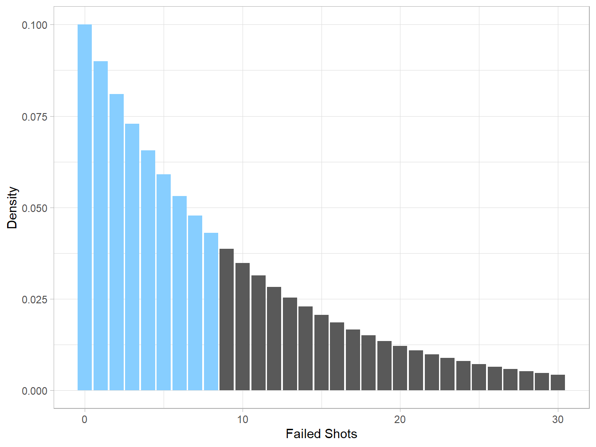
Here are a few things to remember from the code above before we move on.
-The ifelse(test, yes, no) function is in base R and allows us to set a condition for the fill aesthetic of our bar plot. We are essentially telling ggplot to fill each bar blue if the shot_num is less than or equal to 9. Otherwise, fill the rest of the bars gray.
-By default, the lower.tail argument is set to TRUE, meaning that we are finding the area of the distribution from the first shot to the ninth shot. However, if we set the lower.tail argument to FALSE, we will get the area of the distribution after the eighth shot.
pgeom(8, prob = 0.1, lower.tail = FALSE)## [1] 0.3874205# As represented on a bar plot
ggplot(dgeom) +
geom_bar(aes(x = failures, y = density),
stat = "identity",
fill = ifelse(dgeom$failures > 8, "skyblue1", "grey35")) +
labs(x = "Failed Shots", y = "Density")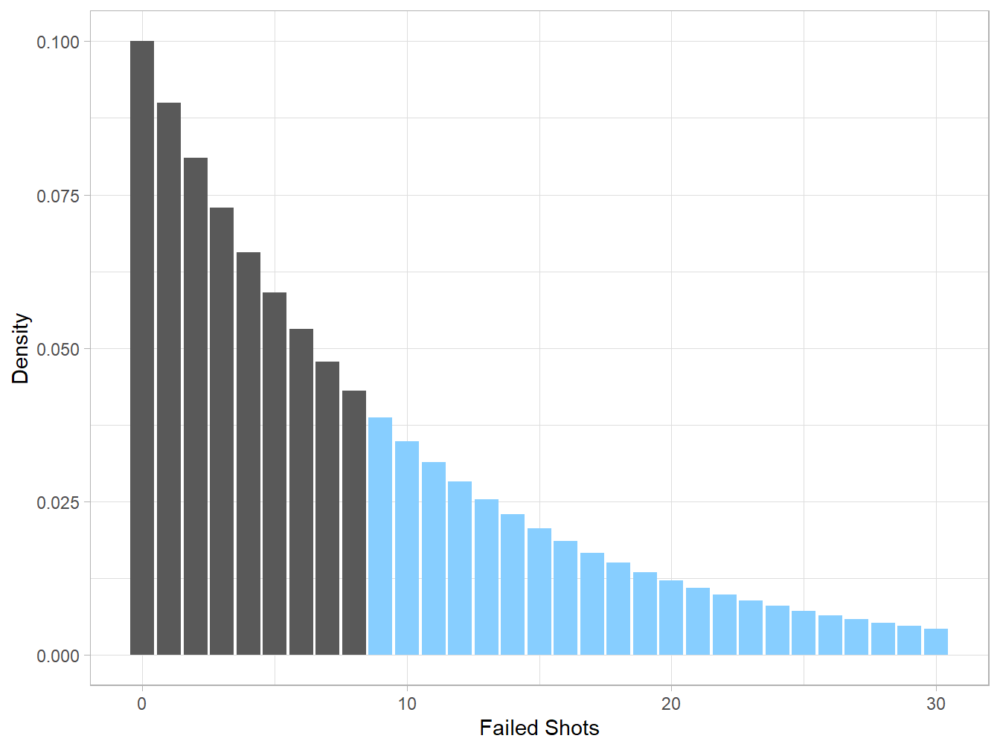
The qgeom() function can be thought of as the inverse of pgeom(). Because of this, we enter in a cumulative density (value from 0-1) into the function and it returns the shot number in which we would expect to reach that cumulative density, from left to right on a number line.
Like pgeom(), keep in mind that lower.tail is set to TRUE by default.
By what shot can we begin expecting the player have already made a free throw? To answer this question, we will enter 50% as a cumulative density.
qgeom(0.5, prob = 0.1)## [1] 6dgeom <- dgeom %>%
mutate(cume_dist = cumsum(density))
ggplot(dgeom) +
geom_bar(aes(x = failures, y = density),
stat = "identity",
fill = ifelse(dgeom$cume_dist <=.5, "skyblue1", "grey35")) +
labs(x = "Shot Number", y = "Density")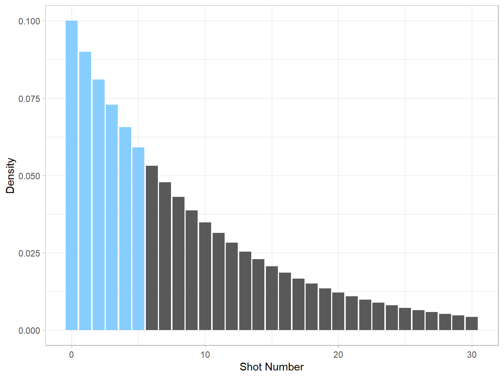
There is quite a bit to unpack here. We use mutate() to create a new variable for the cumulative density at each shot. This is the sum of a shot’s density and all of the previous shots before it.
Next, we return to the ifelse() function to determine which bars to fill. We can interpret our code as “If the cumulative density of this shot is less than or equal to .5, fill it blue; otherwise, fill it gray.”
Finally, imagine that 1,000 exact copies of the basketball player shoot free throws. Below is the distribution of those outcomes. The function rgeom() simulates each of the 1,000 players and returns the number of their first successful shot.
rand_geom <- tibble(deviates = rgeom(1000, 0.1))
ggplot(rand_geom) +
geom_histogram(aes(x = deviates),
binwidth = 2) +
labs(x = "First Shot", y = "Frequency") +
scale_x_continuous(breaks = seq(0, 80, 10)) # Added more ticks on x axis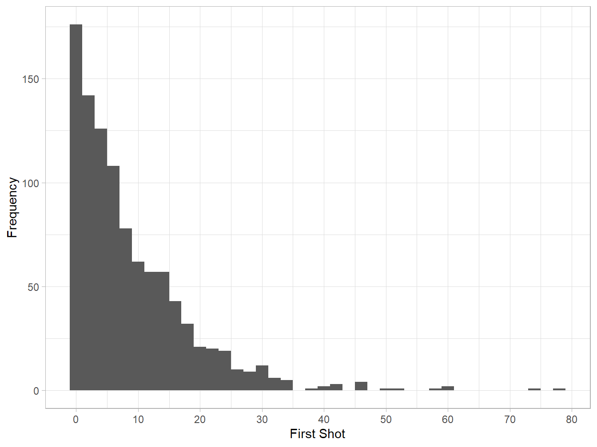
As stated at the beginning of this chapter, the geometric distribution can be thought of the spread of N trials required to get probability p. Because of this, as we increase the number of simulated basketball players, we reach a distribution more and more similar to the actual binomial distribution.
To visualize this, we’ll generate four plots: three randomly-sampled geometric distributions and a “true” geometric distribution. To simplify our code, we’ll start by writing a new function called geom_plot. If function-writing is unfamiliar to you, I encourage you to read this friendly introduction.
# Create a function that randomly samples from geometric distribution with sample size n
geom_plot <- function(prob, n){
temp <- tibble(deviates = rgeom(n, prob))
plot <- ggplot(temp, aes(x = deviates)) +
geom_histogram(binwidth = 2) +
scale_x_continuous(breaks = seq(0, 80, 20)) +
labs(x = NULL, y = NULL, caption = str_c(n, "simulations", sep = " "))
return(plot)
}
# Generate random samples and plots
sample_1000 <- geom_plot(0.1, 1000) +
labs(y = "Count",
title = "Random Deviates")
sample_10000 <- geom_plot(0.1, 10000)
sample_100000 <- geom_plot(0.1, 100000)
# Generate true geometric distribution
dgeom <- tibble(shot_num = 1:80,
density = dgeom(1:80, prob = 0.1, log = FALSE))
true_plot <- ggplot(dgeom) +
geom_bar(aes(x = shot_num, y = density), stat = "identity", width = 0.5) +
labs(x = "First Shot",
y = "Density",
title = "Geometric Distribution") +
scale_x_continuous(breaks = seq(0, 80, 20))
# Plot all together in a grid
cowplot::plot_grid(NULL, true_plot, NULL, sample_1000, sample_10000, sample_100000, ncol = 3, nrow = 2)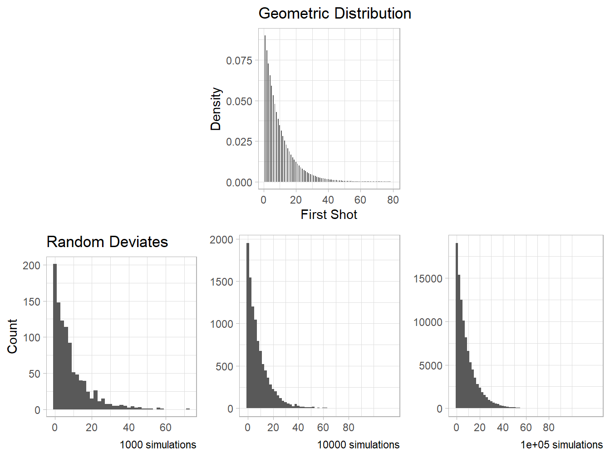
4.2 Binomial Distribution
While we would use the geometric distribution to model the number of failed free throws until a successful shot, the binomial distribution instead considers the probability of successful free throws in a fixed number of attempts. It is defined belowbelow:
\[P(K = k) = C_{n,k}p^{k}(1-p)^{n-k}\\\textrm{where} \hspace{0.2cm}C_{n,k}\hspace{0.2cm}\textrm{is the number of ways that we can pick k successes in n trials.}\]
At first glance, this formula is complicated, but it can be easily divided into two parts:
\(C_{k,n}\) represents the number of ways we can select k successes in n trials. This combination can be calculated as \(C_{n,k}=\frac{n!}{k!(n-k)!}\).
\(p^{k}(1-p)^{n-k}\) or the probability of getting k successes and therefore n-k failures.
We multiply the scenarios term by the probability term to account for the fact that there are multiple ways that we can get to the kth success. A basketball player does not need to make k shots in a particular order.
For example, if we are interested in the probability that the basketball player shoots 30 free throws and makes 3 of them, we can plug these numbers into our equation.
We have n = 30 independent trials, assuming that the player shoots at the same place and does not get tired.
We want to have k = 3 successful free throws and n- k = 27 unsuccessful ones.
Recall that the probability of a successful shot is p = 10%. Thus, a missed shot has probability 1 - p = 90%.
Thus, our density formula allows us to find the probability of a basketball player making 3 shots using simple multiplication.
\[P(K = 3) = C_{30,3}(.10)^{3}(1-.10)^{27}\approx.2361\]
With R, the function dbinom() similarly accomplishes this.
# The arguments do not all need to be named, but I will do so here.
dbinom(x = 3, size = 30, prob = .1)## [1] 0.2360879In other words, the probability that the basketball player shoots 30 free throws and makes exactly 3 of them is about 0.2361.
As we begin visualizing this with ggplot(), we should return to our strategy from the geometric chapter by creating a data frame or tibble with two columns–one to signify all of the possible number of successes that we can have, and another of their corresponding probabilities or densities.
dbinom <- tibble(shots = 0:30,
density = dbinom(0:30, size = 30, prob = .1))We can now plot this with geom_bar().
ggplot(dbinom) +
geom_bar(aes(x = shots, y = density),
stat = "identity") +
labs(x = "Successful Shots", y = "Density") +
scale_x_continuous(breaks = seq(0, 30, 2))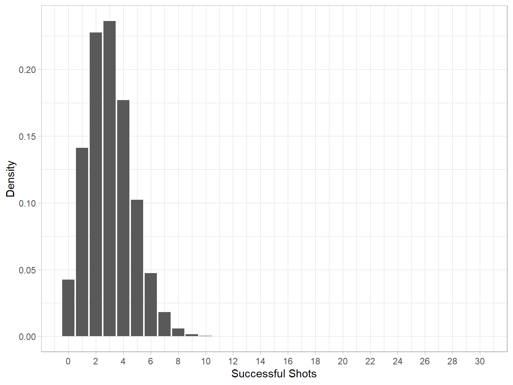
As seen above, it is quite unlikely that the basketball player will make more than 10 shots. In fact, their probabilities aren’t even large enough for the bars to register on the plot.
In some scenarios in the statistics world, we aren’t only interested in the probability of getting exactly k successes; we may want to consider a range of outcomes. For example, a personal coach who records the basketball player’s progress wants to determine the probability that he makes 3 or fewer shots out of 30.
Using the previous chapters, we can assume that we would want to use the distribution function pbinom() to answer this question.
# Before you continue, think about what the four arguments mean. Why would we set the lower.tail to TRUE instead of FALSE?
pbinom(3, 30, 0.1, lower.tail = TRUE)## [1] 0.6474392The first argument in the above function is similar to the other “p” functions since it can be thought of as the “right bound” of interest. We can imagine the pbinom() function as finding the area of the binomial distribution from 0 to 3.
ggplot(dbinom) +
geom_bar(aes(x = shots, y = density),
stat = "identity",
fill = ifelse(dbinom$shots <= 3, "purple2", "lightgray")) +
labs(x = "Successful Shots", y = "Density")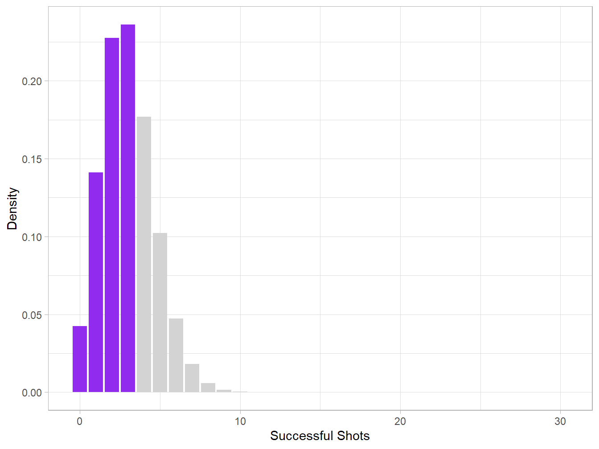
Just as we used it in the geometric distribution section, the ifelse() function allows us to fill our bars with different colors depending on the “shot” value. The interpretation here is “fill the bar purple if number of successful shots is three or fewer. If not, fill the bar gray.”
Like the other “r” functions,rbinom() randomly simulates the outcomes of a distribution. In this case, the function returns the number of successful free throws made all of the simulations. This is useful because it helps us better understand the natural random process.
ranbinom <- tibble(deviates = rbinom(1000, 30, .10))
glimpse(ranbinom)## Rows: 1,000
## Columns: 1
## $ deviates <int> 2, 1, 2, 6, 0, 2, 3, 6, 4, 1, 3, 4, 8, 1, 3, 0, 5, 3, 3, 3, 4~ggplot(ranbinom) +
geom_bar(aes(x = deviates), stat = "count") +
scale_x_continuous(breaks = seq(0,10, 1)) +
labs(x = "Successful Shots", y = "Frequency")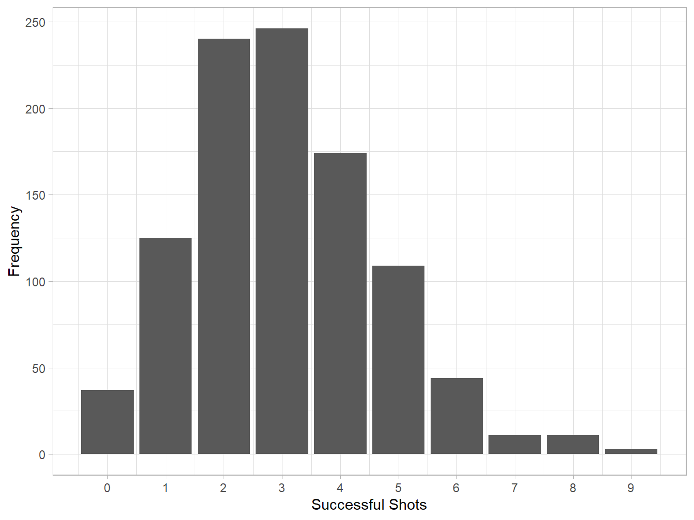
4.3 Negative Binomial Distribution
Next, we’ll introduce the negative binomial distribution. Similar to the from the geometric distribution, we are interested in modeling the number of failures in a binary process. However, we are not only interested in how long it takes for one success; we are interested in modeling the number of failures until a particular number (\(r\)) of successes.
\[\begin{equation} P(Y=y) = \binom{y + r - 1}{r-1} (1-p)^{y}(p)^r \quad \textrm{for}\quad y = 0, 1, \ldots, \infty. \end{equation}\]
An interesting case appears when we set \(r=1\), i.e. the number of failures until one success.
\[\begin{split} P(Y=1) &= \binom{y + 1 - 1}{1-1} (1-p)^{y} (p)^1 \\ &= \binom{y}{0} (1-p)^yp \\ &=(1-p)^yp \quad \textrm{for} \quad y = 0, 1, \ldots, \infty \end{split}\]
Notice how the last line of this looks exactly like the geometric distribution? This is because the geometric distribution is a special case of the negative binomial distribution.
Now let’s return to the basketball example. As we have established before, there is about a 4% chance that our player makes 8 failures before his first successful shot. What is the probability that he makes 8 failures before his second successful shot?
dnbinom(8, 2, 0.1)## [1] 0.03874205dnbinom <- tibble(failures = 0:30,
density = dnbinom(0:30, 2, 0.1))
ggplot(dnbinom, aes(x = failures, y = density)) +
geom_bar(stat = "identity", fill = "turquoise1", color = "black") +
labs(x = "Failed Shots", y = "Density",
title = "Number of Failures until Second Free Throw")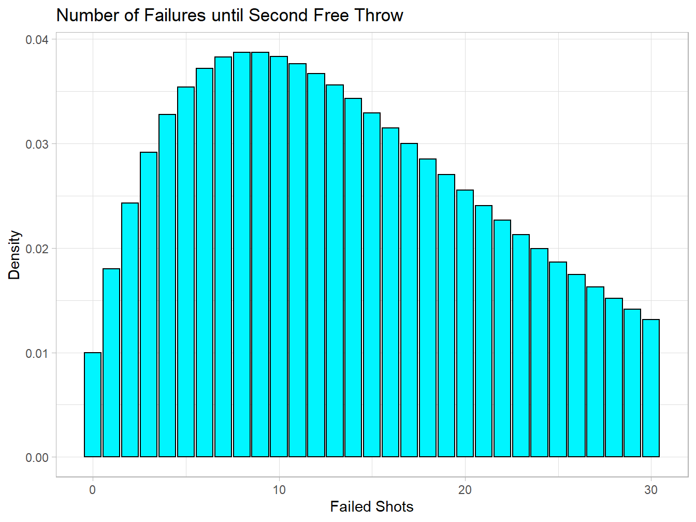
Now that we have a new parameter r, how does the distribution change as it increases or decreases?
nbinom_plot <- function(x, size, prob){
temp <- tibble(failures = x,
density = dnbinom(x, size, prob),
cume_density = cumsum(density))
median <- temp %>% filter(between(cume_density, .5, .55))
plot <- ggplot(temp, aes(x = failures, y = density)) +
geom_density(stat = "identity") +
geom_vline(xintercept = median$failures[1]) +
labs(x = NULL, y = NULL)
return(plot)
}
p1 <- nbinom_plot(0:100, 3, 0.1) +
ggtitle("r = 3, prob = 0.1")
p2 <- nbinom_plot(0:100, 5, 0.1) +
ggtitle("r = 5, prob = 0.1") +
labs(x = "Failures", y = "Density")
p3 <- nbinom_plot(0:100, 7, 0.1) +
ggtitle("r = 7, prob = 0.1")
p4 <- nbinom_plot(0:100, 5, 0.15) +
ggtitle("r = 5, prob = 0.15")
p5 <- nbinom_plot(0:100, 5, 0.08) +
ggtitle("r = 5, prob = 0.05")
plot_grid(p1, NULL, p4, NULL, p2, NULL, p3, NULL, p5, ncol = 3, nrow = 3)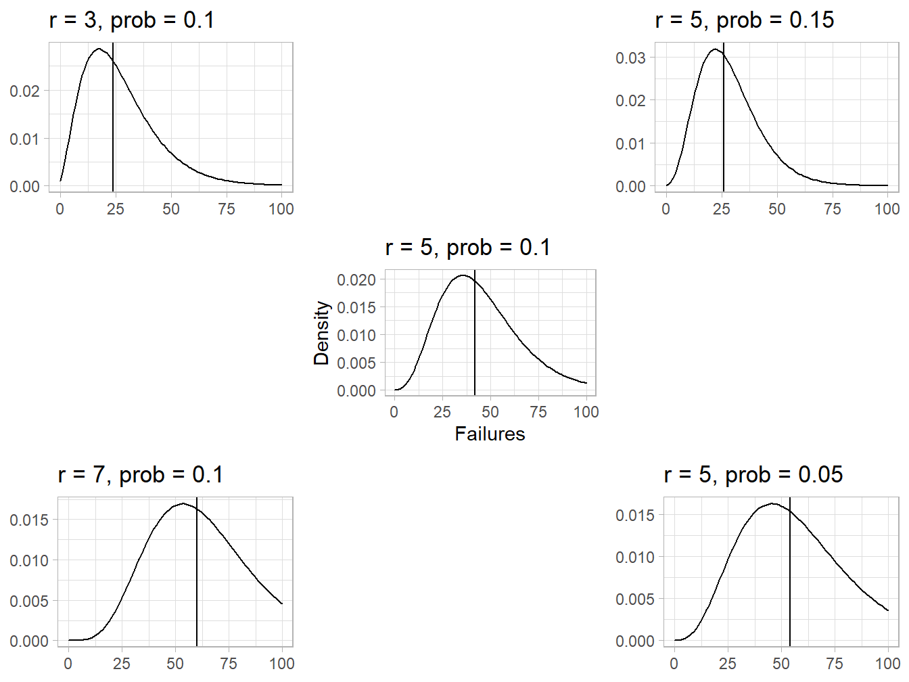
As you can see, the center of the distribution moves right as \(r\) increases or the probability of a success decreases.
4.4 Poisson Distribution
Unlike those based on Bernoulli processes (binary and independent outcomes), a Poisson process considers the number of times an event occurs in a given time or space. If \(K\), for instance, is the number of events in an interval, we’ll model it with the Poisson Distribution.
\[ P(K=k) = \frac{e^{-\lambda}\lambda^k}{k!} \quad \textrm{for} \quad \mathrm{k} = 0, 1, \ldots, \infty \\ \textrm{Where} \enspace \lambda \enspace \textrm{is the average number of events in a unit of time} \]
Now, we’ll put this formula into practice.
Consider a pet shelter which has an average of 10 adoptions per month. Every month, they rescue 9 pets. If the shelter currently has 40 pets, what is the probability that have less than 45 pets at the end of the month in order to prevent overcrowding?
From above, we can deduce that the shelter would need to have more than 4 adoptions in order to prevent overcrowding.
\[ \begin{split} \textrm{Current pets} \enspace + \enspace \textrm{Rescues} \enspace - \enspace \textrm{Adoptions} &= \textrm{Total pets} \\ 40 + 9 - \textrm{Adoptions} &<45 \\ \textrm{Adoptions} &> 4 \end{split} \]
Plugging in \(\lambda = 10\) and \(k=5,6,7,\ldots40\)
\[ \begin{split} P(K=5) + P(K=6) \ldots + P(K=40) &= \frac{e^{-10}10^5}{5!} &+ \frac{e^{-10}10^6}{6!} &+ \ldots + \frac{e^{-10}10^{40}}{40!} \\ &=\frac{2500}{3e^{10}} &+ \frac{12500}{9e^{10}} &+ \ldots + \frac{10^{40}}{e^{10}40!} \\ &= 0.03783 &+ 0.06305 &+ \ldots +0 \\ &\approx 0.97075 \end{split}\]
There is about a 97% probability that the pet rescue center has at least 5 adoptions. In other words, it’s quite likely that they will not have overcrowding.
Using R, we can use the density function dpois and more easily calculate the densities from 5 to 40 adoptions.
sum(dpois(5:40, lambda = 10))## [1] 0.9707473The ppois distribution function also work here.
ppois(4, 10, lower.tail = FALSE) # 4 is not included## [1] 0.9707473adoptions <- tibble(num_adopt = 0:40,
density = dpois(0:40, 10))
ggplot(adoptions, aes(x = num_adopt, y = density)) +
geom_bar(width = 0.5, stat = "identity",
fill = ifelse(between(adoptions$num_adopt, 5, 40), "orchid1", "black")) +
labs(x = "Number of Adoptions per Month",
y = "Density")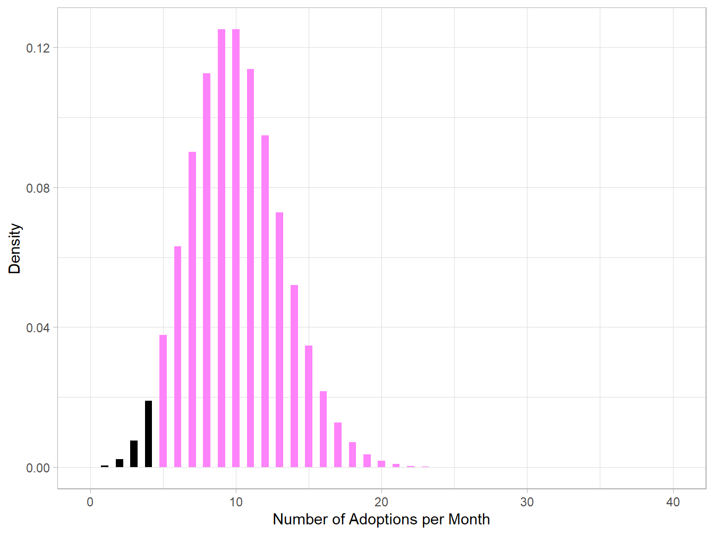
As we have established, the probability mass function for a poisson distribution has a mean of \(E(K) = \lambda\). The above plot seems to agree with this, since the distribution is roughly symmetric about 10.
The standard deviation of a poisson distribution is \(\sqrt{\lambda}\). In this case, one standard deviation would be \(\sqrt{10}\approx3.16\).
How does the distribution change as we manipulate our parameter \(\lambda\)? Applied to our example, how do the overall spread of adoptions change as the average number of adoptions change per month?
pois_plot <- function(x, lambda){
temp <- tibble(num_adopt = x,
density = dpois(x, lambda),
cume_density = cumsum(density))
plot <- ggplot(temp, aes(x = num_adopt, y = density)) +
geom_bar(stat = "identity", width = 0.2) +
labs(x = NULL, y = NULL)
return(plot)
}
adoptplot_1 <- pois_plot(0:40, 2) +
ggtitle("Lambda = 2")
adoptplot_2 <- pois_plot(0:40, 3) +
ggtitle("Lambda = 3")
adoptplot_3 <- pois_plot(0:40, 5) +
ggtitle("Lambda = 5")
adoptplot_4 <- pois_plot(0:40, 10) +
labs(title = "Lambda = 10", x = "Number of Adoptions", y = "Density")
plot_grid(NULL, adoptplot_4, NULL, adoptplot_1, adoptplot_2, adoptplot_3, nrow = 2, ncol = 3)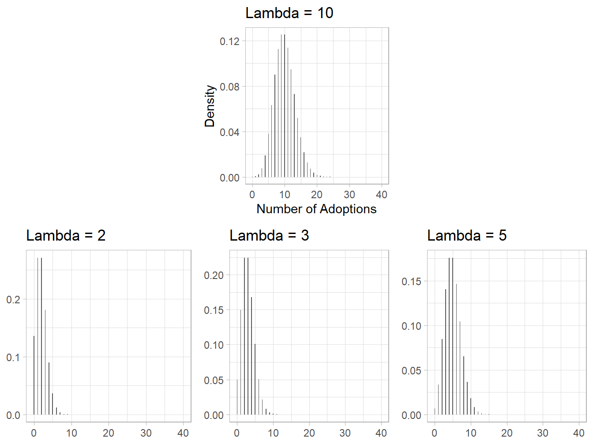
As you the plots above illustrate, the poisson distribution becomes more symmetric as \(\lambda\) increases. When \(\lambda\) is relatively small, the distribution is more right-skewed.